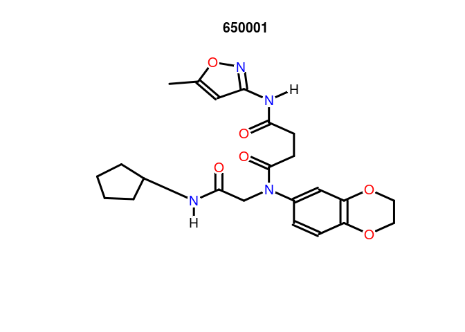

ChemmineR integrates now a subset of cheminformatics
functionalities implemented in the OpenBabel C++ library (Noel M O’Boyle et al., 2008; Y. Cao et al., 2008). These
utilities can be accessed by installing the ChemmineOB
package and the OpenBabel software itself. ChemmineR
will automatically detect the availability of
ChemmineOB and make use of the additional utilities.
The following lists the functions and methods that make use of
OpenBabel. References are included to locate the sections in the manual
where the utility and usage of these functions is described.
Structure format interconversions (see Section Format Inter-Conversions)
-
smiles2sdf: converts from SMILES to SDF object -
sdf2smiles: converts from SDF to SMILES object -
convertFormat: converts strings between two formats -
convertFormatFile: converts files between two formats. This function can be used to enable ChemmineR to read in any format supported by Open Babel. For example, if you had an SML file you could do:
convertFormatFile("SML","SDF","mycompound.sml","mycompound.sdf")
sdfset=read.SDFset("mycompound.sdf")propOB: generates several compound properties. See the man page for a current list of properties computed.
propOB(sdfset[1])## cansmi
## 650001 O=C(Nc1noc(c1)C)CCC(=O)N(c1ccc2c(c1)OCCO2)CC(=O)NC1CCCC1
## cansmiNS formula title
## 650001 O=C(Nc1noc(c1)C)CCC(=O)N(c1ccc2c(c1)OCCO2)CC(=O)NC1CCCC1 C23H28N4O6 650001
## InChI
## 650001 InChI=1S/C23H28N4O6/c1-15-12-20(26-33-15)25-21(28)8-9-23(30)27(14-22(29)24-16-4-2-3-5-16)17-6-7-18-19(13-17)32-11-10-31-18/h6-7,12-13,16H,2-5,8-11,14H2,1H3,(H,24,29)(H,25,26,28)
## HBA1 HBA2 HBD logP MR MW nF TPSA
## 650001 37 10 2 3.0288 119.9234 456.4916 0 123fingerprintOB: generates fingerprints for compounds. The fingerprint name can be anything supported by OpenBabel. See the man page
for a current list.
fingerprintOB(sdfset,"FP2")## An instance of a 1024 bit "FPset" of type "FP2" with 100 moleculessmartsSearchOB: find matches of SMARTS patterns in compounds
#count rotable bonds
smartsSearchOB(sdfset[1:5],"[!$(*#*)&!D1]-!@[!$(*#*)&!D1]",uniqueMatches=FALSE)## 650001 650002 650003 650004 650005
## 24 20 14 30 10exactMassOB: Compute the monoisotopic (exact) mass of a set of compounds
exactMassOB(sdfset[1:5])## 650001 650002 650003 650004 650005
## 456.2009 357.1801 370.1100 461.1733 318.1943regenerateCoords: Re-compute the 2D coordinates of a compound using Open Babel. This can sometimes
improve the quality of the compounds plot. See also the regenCoords option of the plot function.
sdfset2 = regenerateCoords(sdfset[1:5])
plot(sdfset[1], regenCoords=TRUE,print=FALSE)
generate3DCoords: Generate 3D coordinates for compounds with only 2D coordinates.
sdf3D = generate3DCoords(sdfset[1])canonicalize: Compute a canonicalized atom numbering. This allows compounds with the same molecular
structure but different atom numberings to be compared properly.
canonicalSdf= canonicalize(sdfset[1])canonicalNumbering: Return a mapping from the original atom numbering to the
canonical atom number.
mapping = canonicalNumbering(sdfset[1])